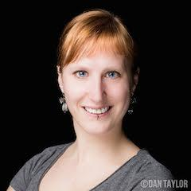

Spreadsheets are Code
Spreadsheets are Code
Spreadsheets are often dismissed by developers for not being “proper programming” but that is not true. Since I have shown that spreadsheets are Turing complete, you have no excuse to diss them any longer. In this session, I will implement various algorithms in Excel to show you its power and elegance.
After all, spreadsheets are ‘live’ and functional, so they have everything going for them. Furthermore they are very fit for TDD and rapid prototyping.
Just as leaning a second natural language is healthy for your brain, so is learning multiple programming languages. Thinking about familiar problems like sorting or shortest path in a strange environment like spreadsheet formulas is like a workout for your brain. Next time you are in need of a quick calculation or prototype, do not have to waste time configuring a server and deploying your code. Surely not for everything, but for some problems, spreadsheets are really suited and this talk will teach you about how to handle those. Being emerged in the world that many of your colleagues and clients live and breath will make it easier to understand them.
Don’t fight spreadsheets any longer, but learn to love them.
Talk objectives:
- Learn the language your customers work in
- Think about how to test and verify spreadsheets
- Get comfortable with using spreadsheets for quick prototyping
Target audience:
Developers working in financial environments or others where spreadsheets are prevalent, and those wanting to see something totally different.
About Felienne
I am Felienne. I am assistant professor at Delft University of Technology, where I research the application of software engineering methods to spreadsheets.
One of my biggest passions in life is to share my enthusiasm for programming with others. I teach a bunch of kids Lego Mindstorms programming every Saturday in a local community center. Furthermore, I am in the board of Devnology, a Dutch developer community that organizes monthly meetings on all things software, from Arduinos to open source and from SmallTalk to storytelling.
Finally, I like organizing things, like the Joy of Coding conference, a one day developer conference in Rotterdam.
Github: Felienne
Twitter: @Felienne